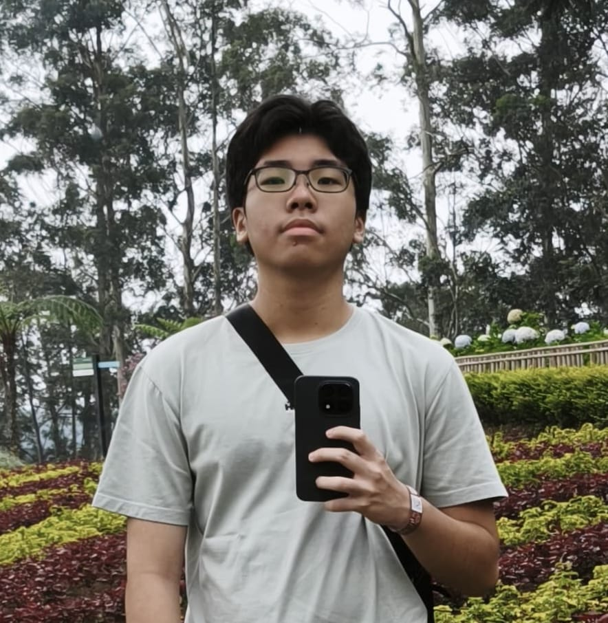

Jovan Sebastian W
Pengelola · Penulis · Kurator Konten
Tentang Website
Saya mengelola dan mengembangkan website ini secara mandiri, mulai dari perancangan struktur, desain, hingga penyusunan konten yang terkurasi.
Website ini dibuat untuk menjawab kurangnya referensi Ultraman berbahasa Indonesia yang tersusun rapi dan informatif. Tujuannya adalah menyediakan ruang yang lebih terstruktur bagi pembaca yang ingin memahami Ultraman secara mendalam.
Website ini berfokus pada pembahasan Ultraman, Kaiju, dan Film dengan pendekatan kurasi dan analisis. Konten disusun dengan memfokuskan pada kualitas, konteks, serta relevansi historis.
Melalui website ini, saya berharap pembaca dapat menemukan informasi yang jelas, terkurasi, dan bernilai. Silakan jelajahi konten yang tersedia dan gunakan website ini sebagai referensi dalam memahami dunia Ultraman secara lebih utuh.